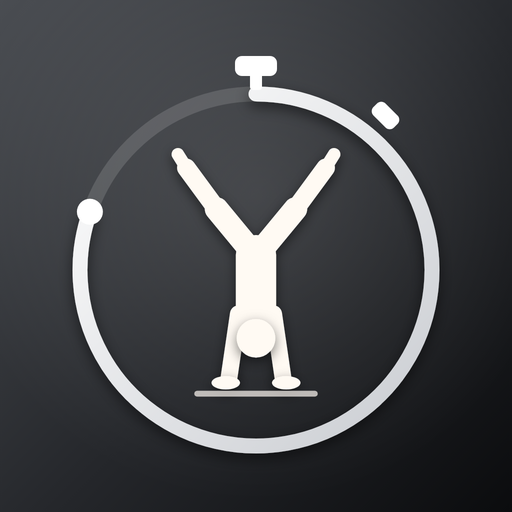

Handstand Logbuch
Handstand
Logbuch
Stell das Handy hochkant neben dich, tippe auf Start und leg los. Die App erkennt den Handstand, stoppt die Zeit und nimmt die ganze Session auf.
- Ganzer Körper muss im Bild sein, im Handstand auch die Füße
- Deine Haltezeit wird für jeden Versuch ins Video eingeblendet
- Video und Zeiten bleiben auf deinem Handy
Letzte Session noch daWird beim Start der nächsten Session gelöscht.
0,0
Erkennung lädt …
0Versuche
–Bester
–Gesamt
0Ziel
Deine Session
Nur was du hier speicherst, landet in Fotos oder Dateien. Alles andere wird beim Start der nächsten Session gelöscht.
Wähle die Übungen und ihre Dauer. Das Aufwärmen läuft ohne Töne, Übung und Restzeit stehen groß auf dem Bildschirm.
Aufwärmen fertig
Handgelenke und Schultern sind bereit.
Schick deine Werte an einen Kollegen und vergleicht euch. Es wird nichts hochgeladen: Ihr tauscht nur eine Nachricht mit einem Code aus.